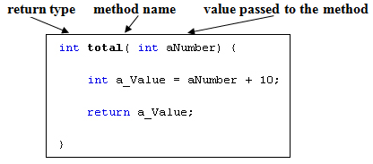
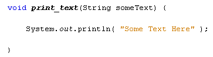
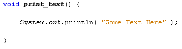
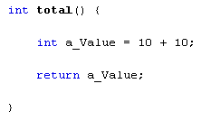

You have been using methods in the previous section, and have seen how useful the inbuilt ones can be. In this section, you'll learn to write your own methods.
A method is just a chunk of code that does a particular job. But methods are set out in a certain way. You have a method header, and a method body. The header is where you tell Java what value type, if any, the method will return (an int value, a double value, a string value, etc). As well as the return type, you need a name for your method, which also goes in the header. You can pass values over to your methods, and these go between a pair of round brackets. The method body is where you code goes.

The method's return type goes first, which is an int type in the code above. After the method type, you need a space followed by the name of your method. We've called the one above total. In between a pair of round brackets we've told Java that we will be handing the method a variable called aNumber, and that it will be an integer.
To separate this method from any other code, you need a pair of curly brackets. Your code for the method goes between the curly brackets. Note the word return in the method above. This is obviously the value that you want to return from your method, after your code has been executed. But it must be of the same type as the return type in the method header. So the return value can't be a string if you started the method with int total.
Sometimes you don't want Java to return anything at all. Think of Trim in the previous section. You may only want the Trim method to get on with its job, and not return anything to you. A method that doesn't return any value at all can be set up with the word void. In which case, it doesn't need the return keyword. Here's a method that doesn't return a value:

All the method above does is to print some text. It can just get on with its job, so we've set it as a void method. There's no return value.
Methods don't need to have values passed to them. You can just execute some code. Here's a void method without any values being passed over:

And here's an int method that has no values being passed:

As you can see, the round brackets are empty in both methods. But they are still needed. Miss the round brackets out and you'll get an error message.
In the next lesson, you'll learn how to call your methods into action.